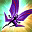

HABILIDADES

PIX, COMPANHEIRO DAS FADAS

LANÇA BRILHANTE

CAPRICHOSO
SOCORRO, PIX!

CRESCIMENTO SELVAGEM

PIX, COMPANHEIRO DAS FADAS
PASSIVA
Pix dispara raios mágicos de energia sempre que o campeão que ele está seguindo ataca outra unidade inimiga. Esses raios são teleguiados, mas podem ser interceptados por outras unidades.

LANÇA BRILHANTE
Q
Lança uma esfera brilhante que causa dano ao primeiro inimigo atingido.

CAPRICHOSO
W
Caprichos encantadores ajudam Lulu a controlar seus aliados e seus inimigos.

SOCORRO, PIX!
E
Lulu invoca Pix para ajudar a aumentar o poder de ataque de um aliado.

CRESCIMENTO SELVAGEM
R
Aumenta o tamanho de um aliado, dando a eles mais vida e poder.